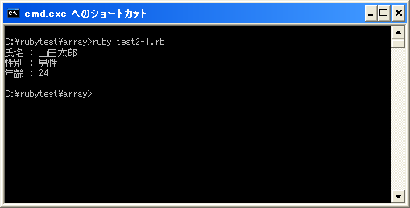

要素とインデックス
配列は要素と呼ばれるものを使ってオブジェクトに対する名札を管理しています。次の例を見てください。
array = [2005, 2006, 2007, 2008]
この配列には4つの要素を持っています。そして「2005」「2006」「2007」「2008」の4つの数値オブジェクトを管理しています。1つ目の要素は「2005」への名札であり、2つ目の要素は「2006」への名札です。
配列に含まれる要素を取り出せば、その要素に関連付けられたオブジェクトを参照できます。またその要素に新しいオブジェクトを代入する事も出来ます。
そこで複数ある要素から1つを特定することが出来るように、要素には先頭から順に番号が割り当てられています。この番号をインデックスと呼んでおり「0」「1」「2」...と0から順に番号が割り当てられています。この番号を使うことで要素を指定することが出来るわけです。(なおインデックスには負の値を指定することも可能です。負の値の場合は「-1」なら一番最後の要素、「-2」なら最後から二番目の要素となります)。
では特定の要素を取り出す方法を確認します。書式は次の通りです。
配列オブジェクト[インデックス]
引数に指定したインデックスを持つ要素を取り出します。
実際には次のように記述します。
array = [2005, 2006, 2007, 2008] print(array[0]) year = array[1]
上記では4つの要素を持つ配列の中から「0」番目の要素を取り出しています。「0」番目の要素は「2005」と言うオブジェクトを参照していますので画面には「2005」が出力されます。取り出した要素を変数に代入して使用することも出来ます。この時は変数に他の変数を代入した場合と同じような扱いとなります。(「他の変数を代入」を参照して下さい)。
atメソッド
詳しくは次のページで確認しますが配列オブジェクトはArrayクラスのオブジェクトです。Arrayクラスでは要素を取得するために「at」メソッドが用意されています。
配列オブジェクト.at(pos)
引数にインデックスを指定することで、要素を取得することが出来ます。具体的には次のように記述します。
array = [2005, 2006, 2007, 2008] print(array[0]) print(array.at(0))
「array[0]」も「array.at(0)」も同じ要素を取得しています。
サンプルプログラム
では簡単なプログラムで確認して見ます。
#! ruby -Ku
require "kconv"
array = ["山田", "太郎", "男性", 24]
print(Kconv.tosjis("氏名 : " + array[0] + array[1] + "¥n"))
print(Kconv.tosjis("性別 : " + array[2] + "¥n"))
print(Kconv.tosjis("年齢 : "),array[3], "¥n")
上記のプログラムを「test2-1.rb」として保存します。文字コードはUTF-8です。そして下記のように実行して下さい。

( Written by Tatsuo Ikura )

著者 / TATSUO IKURA
初心者～中級者の方を対象としたプログラミング方法や開発環境の構築の解説を行うサイトの運営を行っています。